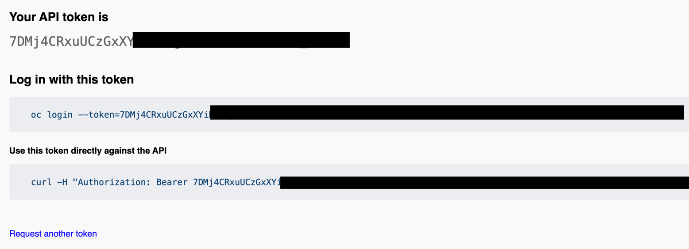
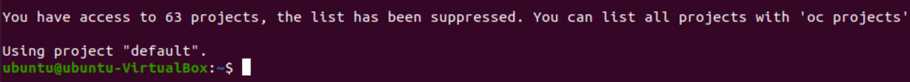
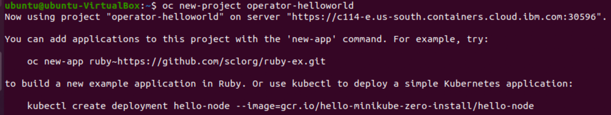
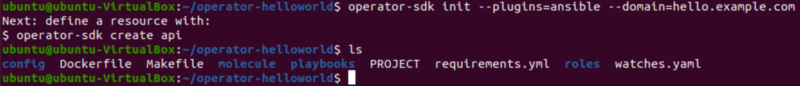
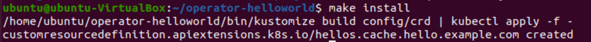
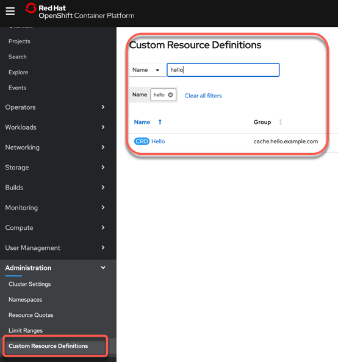
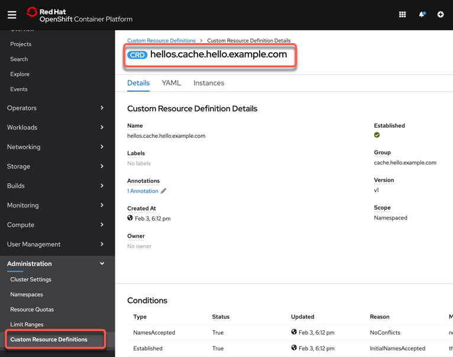
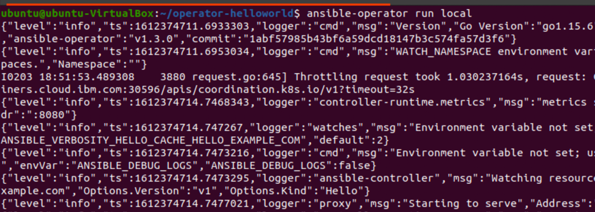

Exercise 1¶
In this exercise you will complete the following:
- Create Operator scaffolding in Ansible
- Add a simple debug print statement to the operator Ansible role
- Update the operator Custom Resource (CR) and add a parameter to toggle the print statement
- Test the operator using the ansible-runner
Step 1: Open your OpenShift web console and copy the login command¶
- Select
Copy Login Command

- Press
Display Token

- Copy
Log in with this token

- Insert in your terminal session
oc login --token=7DMj4CRxuUCzXXXXXXXXXX --server=https://XXXXX.com:30596
- Verify your login
Example output:

Step 2: Create a new OpenShift project¶
oc new-project operator-helloworld
Example output:

Step 3: Create Operator Scaffolding¶
Using the operator-sdk, create the scaffolding for your new operator.
The operator-sdk will generate an Ansible role, create a new custom resource definition (CRD) and all the necessary k8s objects to install the operator. This is a two step process. First initialize and then create API.
mkdir operator-helloworld
cd operator-helloworld
operator-sdk init --plugins=ansible --domain=hello.example.com
The image below show the created folders and files.

operator-sdk create api --group cache --version v1 --kind Hello --generate-role
Step 4: Create Custom Resource Definition (CRD)¶
The operator-sdk will generate a Custom Resource Definition (CRD).
The Custom Resource Definition (CRD) will
extendthe k8s API and allow users tointeractwith the Operator through the API.
Here we will install Custom Resource Definition (CRD) in the current project operator-helloworld.
make install
Example output:

Note: To inspect what happens during the install, just open the Makefile.
nano Makefile

Optional Step 4.1: Inspect the created Custom Resource Definition (CRD) in your cluster¶
- Open OpenShift web console and select
Administration -> Custom Resource Definitionsand inserthellointo the search field.

- Press
Helloand you see the details of the Custom Resource Definitions.

Step 5: Add Print Task to Operator Role¶
The operator framework implements Ansible roles. By default it will create a single role but you can certainly have many roles. Roles are mapped to the API endpoint of the CRD in the watches.yaml file. In this case we will be adding a print statement that will print some debug when a parameter toggle_message is set to true to the role.
- Open the
./watches.yamlfile and inspect the content.
nano watches.yaml
# Use the 'create api' subcommand to add watches to this file.
- version: v1
group: cache.hello.example.com
kind: Hello
role: hello
# +kubebuilder:scaffold:watch
- Open the
./roles/hello/tasks/main.ymlfile and insert the print statement.
nano roles/hello/tasks/main.yml
The content to add to the main.yml
---
# tasks file for hello
- name: Hello World Task
debug:
msg: "Hello World! I live in a namespace called {{ ansible_operator_meta.namespace }}"
when: toggle_message
Step 6: Add parameter to the Operator Custom Resource¶
Here we will add the toggle_message parameter to the CR. Any parameters under the CR spec are automatically visible in Ansible.
This is how you get input from your users. In addition as you may have noticed you can access CR metadata using the ansible_operator_meta parameter in ansible. In the above example that is the name os the namespace.
nano config/samples/cache_v1_hello.yaml
Content to add to cache_v1_hello.yaml file. foo: bar will be replaced with toggle_message: true.
apiVersion: cache.hello.example.com/v1
kind: Hello
metadata:
name: hello-sample
spec:
toggle_message: true
Step 7: Run Operator using ansible-runner¶
Now that we have implemented some tasks and our parameter we can run ther Operator locally using the ansible-runner to test it.
ansible-operator run local
Example output:

Step 8: Create a hello custom resource¶
Open another terminal and create the CR in your OpenShift cluster. Once the CR is created, the Operator will execute the Ansible role tasks and print our debug message.
oc create -f config/samples/cache_v1_hello.yaml

Example output first terminal:
TASK [Hello World Task] ********************************
ok: [localhost] => {
"msg": "Hello World! I live in a namespace called operator-helloworld"
}